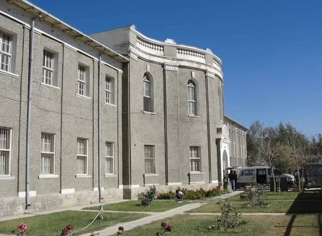
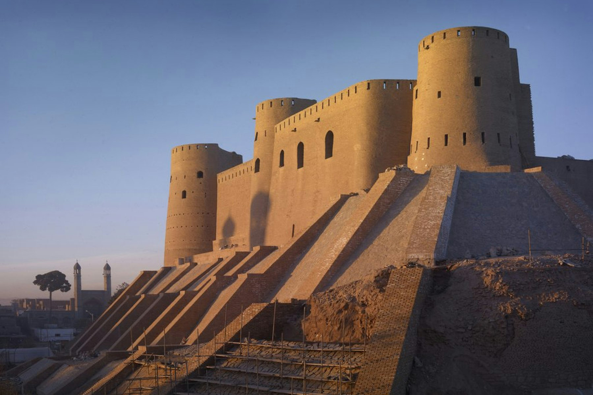
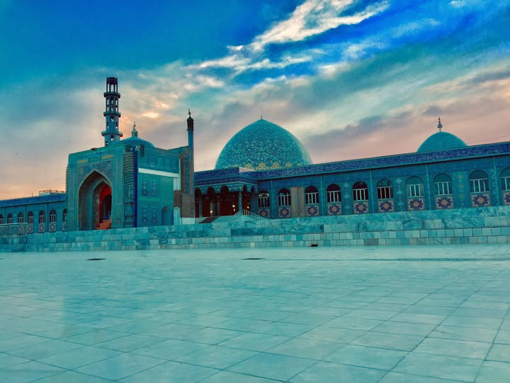

Afghanistan's culture is a rich mosaic shaped by centuries of history, conquest, and coexistence. With over a dozen ethnic groups—including Pashtuns, Tajiks, Hazaras, Uzbeks, and Turkmens—the country celebrates a wide range of languages, cuisines, music, dances, and traditions. Poetry is deeply embedded in daily life, and oral storytelling, carpet weaving, and calligraphy are cherished across regions. Despite decades of war, Afghan culture remains resilient, carried forward by its people, their faith, their languages, and their deep sense of hospitality and pride in heritage.

Kabul
As the capital city, Kabul is a melting pot of Afghanistan’s diverse ethnic and cultural groups. Despite modern challenges, it remains vibrant with historic bazaars, folk music, and urban art movements. It also houses important museums and cultural centers like the National Museum of Afghanistan.

Herat
Herat is known as the cultural heart of Afghanistan. With its deep Persian influence, it was once a center of learning, poetry, miniature painting, and Islamic architecture. The famous Herat Citadel, Friday Mosque, and Timurid-era libraries reflect its rich artistic and intellectual legacy.

Mazar-i-Sharif
Mazar is a spiritual and cultural hub in northern Afghanistan, home to the stunning Blue Mosque (Shrine of Ali). The city is deeply tied to Islamic festivals and Nowruz (New Year) celebrations, drawing thousands for its Red Flower Festival every spring..jpg)